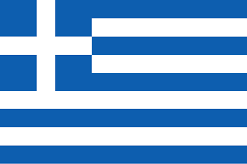
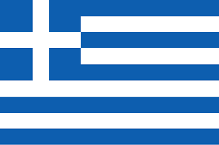
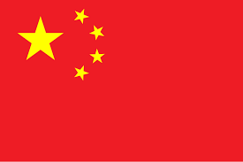
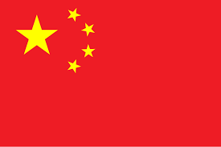
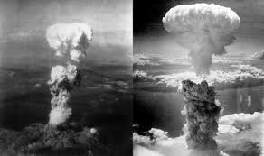
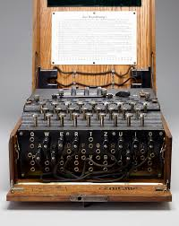

LA SEGUNDA GUERRA MUNDIAL
La Segunda Guerra Mundial fue un conflicto global que se desarrolló entre 1939 y 1945, marcado por la invasión alemana de Polonia y la posterior expansión del conflicto a nivel mundial, resultando en el mayor número de muertes en la historia. Esta guerra quedo dividida en 2 bandos, los cuales fueron los aliados y las potencias del eje y cada bando tuvo maquinaria distinta en el desalloro de la guerra.
Los Aliados
Los Aliados estaban conformadas por Francia, Reino Unido, Estados Unidos, Unión Soviética, China, Polonia, Noruega, Dinamarca, Bélgica y Luxemburgo.


 



Entre la maqunarias utilizadas por los aliados tenemos:
El tanque
Los bombarderos
Los misiles y cohetes
La maquina Bombe
Los Acorazados
La famosa y muy conocida, bomba nuclear lanzada en hiroshima y nagasaki
Las potencias del Eje
La potencias del Eje estaba conformada por Alemania nazi, Italia fascista, Japón imperial, Bulgaria, Hungría, Rumania, Finlandia, Tailandia, Eslovaquia y Serbia.


Entre la maqunarias utilizadas por la potencia del Eje tenemos el tanque, los aviones, los misils v1, la maquina enigma y la famosa artileria Nazi:
El tanque
Los aviones
Los misiles v1
La maquina Enima
La famosa artilleria Nazi